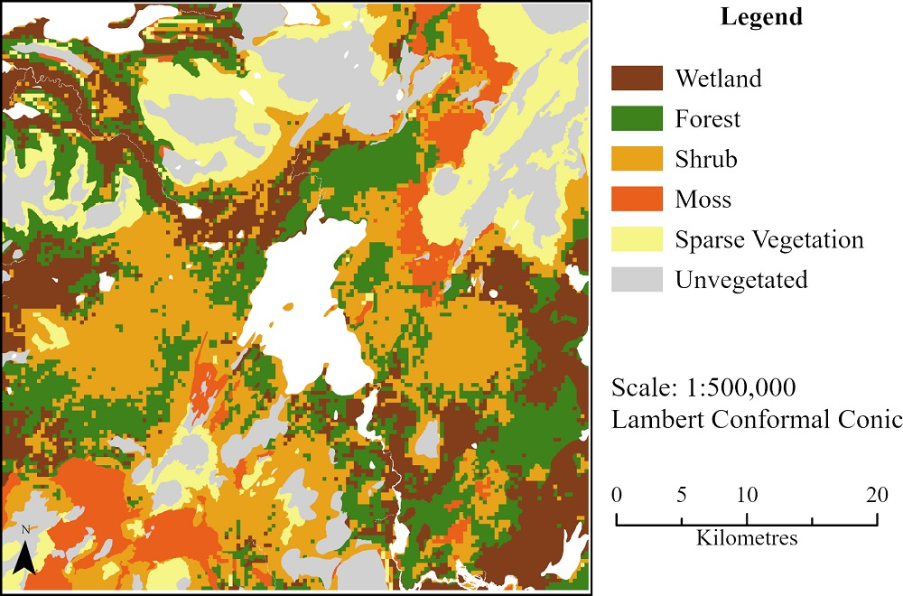
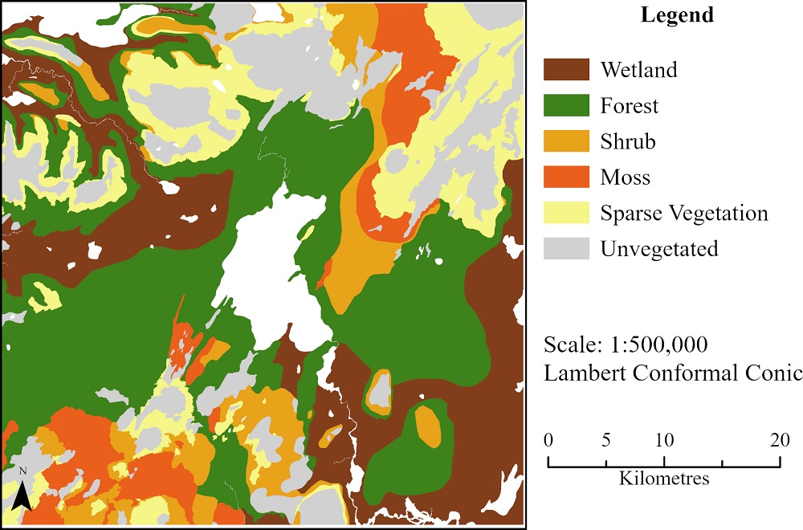

Overview
The landscape Norse sailors would have encountered 1,150 years ago, would have been very different from what we can observe today. Historic texts describe it as rich in forests and resources, almost unbelievable considering only 1.5% is covered in forests today and 40% is classified as deserts. However, how forested the country really was is contested, with estimates ranging from 15% to 40%. As the climate is warming and soil loss threatenes the contry and its people, there is a need for better models of the past. By understanding the past aim to improve the current state and find options to mitigate potentially devastating future as we approach unknown climate thresholds.
Study Area
A.D. 870 - 1100
Thingvellir, Iceland
The area around lake Thingvallavatn was chosen, as the parliament was established just north of it in A.D. 930. Because of its importance there are historic texts that can provide a window into its past. Today it is protected as part of the Thingvellir National Park and a popular tourist destination north-east of Rejkyavik. By choosing this location future visualisations have a higher chance of increasing public engagement in the landscape, and help afforestation efforts.
The project set out to answer the following questions:
- What are the strengths and limitations of pre-Landnám landscape recreations in the literature?
- How well can current-day environmental data sets, with the addition of archaeological data and historic documents, support a new model of the pre-Landnám landscape?
- What are the opportunities and limitations of traditional GIS and novel 3D applications for landscape visualisation?
Models
Current-Day
After reviewing the literature on past landscape recreations and factors that could have caused landscape changes a model was created of the possible current-day vegetation extend - without human intervention or grazing. This was done through a combination of environmental factors such as altitude, slope, soil, and wetness. This model used land cover classes that would better represent the natural environment.

Figure 1: Current-day model of the study area.
Pre-Landnam
After validating the model, the validation data was used to extent the forest and wetland cover, before information from archaeological and historic sources (e.g., historic maps and sagas) was added the estimate the potential land cover before settlement.

Figure 2: Pre-Landnam model of the study area.
Findings
Despite limitations (e.g., resolution) the study confirmed that large areas would have been covered in forests, but previous models underestimated the wetland extent. Downy birch would not have formed forests on wet, poorly drained soil. Furthermore, many of the younger lava fields have struggled to accumulate soil and therefore vegetation is limited, particularly those with dry or poor soil. Comparing the current-day and pre-Landnam land cover model highlights the devastating effect human activity and particularly grazing had on the landscape. However, it also highlights the possibility in the area to reestablish new forests.
Visualisation
Preliminary Testing of Tools
As the aim was to create a model that can be used to increase public engagement options within traditional GIS tools and novel 3D applications were tested. Extrusion and random points bring diversity to visualisations within GIS tools, however they are not fit for larger landscapes or for uses with the wider public. 3D focused Blender showed promise in creating more realistic visualisations, but was limited by storage and processing of the application. Similarly to GIS tools, it would not provide the immersive experience needed for the purpose.
Future Work
As traditional methods proved to be too limited for such a task, further attempts should be made using more advanced tools such as game engines. This could also lead to the use of Virtual Reality (VR), Mixed Reality (MR) or Augmented Reality (AR). A path network was suggested for creating trails that could aid AR and MR applications. Additionally, time steps could be created for the model to more accurately depict deforestation after the settlement.
Takeaway
As settlers arrived they adapted to a new environment and changing climate, but as society thrived the forests died. What will heppen when we cross the next climate threshhold? Will the trees disappear for good or can Iceland become green again, before it is too late?
We need to change peoples mental image of what Iceland should look like to create the necessary engagement required to actually achieve a greener Iceland. Immersive visualisations of the once green landscape could achieve this. But more detailed models are needed, which this study set out to create.
3D models could also help in understanding, qualitatively, the networks created by settlers to ensure their survival and development in harsh conditions. With the rise of irreversible negative climate changes, such insights could be the key to the survival of many endangered societies.